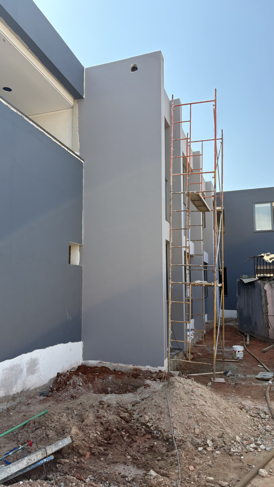
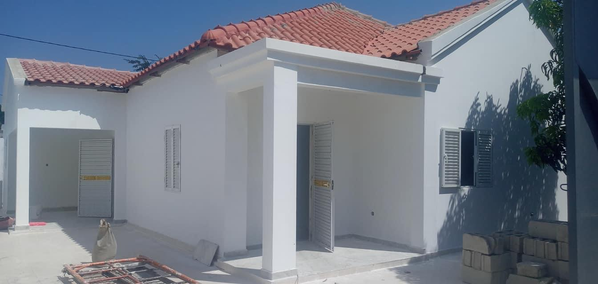

Construção Civil & Obras Públicas
“Construindo Qualidade, Criando Confiança.”
M. SALEM – Comércio e Prestação de Serviços, Lda.
Edição Oficial | Angola
Mensagem do Diretor Geral
Na M. SALÉM – Comércio e Prestação de Serviços, Lda., acreditamos que a construção de infraestruturas vai além da execução de obras; trata-se de construir confiança, criar valor e contribuir para o desenvolvimento sustentável das comunidades que servimos.
A nossa atuação é orientada por valores sólidos de integridade, profissionalismo, responsabilidade e compromisso com a excelência. Procuramos estabelecer relações duradouras com os nossos clientes e parceiros, baseadas na transparência, no respeito mútuo e na satisfação dos resultados alcançados.
Temos como visão consolidar a M. SALÉM como uma referência no sector da construção civil e obras públicas em Angola, destacando-nos pela qualidade dos nossos serviços, pela competência técnica da nossa equipa e pela capacidade de entregar soluções eficientes e sustentáveis.
Cada projeto que assumimos representa um compromisso com a qualidade, a segurança e o cumprimento rigoroso dos prazos estabelecidos. É com esse espírito de dedicação e melhoria contínua que trabalhamos diariamente para superar expectativas e transformar desafios em resultados concretos.
Agradecemos a confiança depositada na nossa empresa e reafirmamos o nosso compromisso de continuar a construir com qualidade, responsabilidade e excelência.
Quem Somos
A M. SALEM – Comércio e Prestação de Serviços, Lda. é uma empresa orgulhosamente angolana, fundada com a visão de introduzir elevados padrões de rigor, modernidade e excelência técnica no mercado da construção civil nacional.
Com capacidade de mobilização em todo o território nacional, atuamos como parceiro estratégico para projetos públicos e privados. O nosso portfólio inclui desde a construção de edifícios residenciais de raiz até complexos trabalhos de engenharia civil, acabamentos de alto padrão e infraestruturas urbanas.
A nossa força reside na integração de uma equipa técnica multidisciplinar qualificada, capaz de gerir com precisão cada fase do ciclo construtivo, garantindo total conformidade legal, técnica e de segurança.
100% Angolana
Profundo conhecimento do mercado local e das especificidades técnicas nacionais.
Atuação Nacional
Presença ativa e logística preparada para atuar em qualquer província de Angola.
Equipa Técnica
Engenheiros e técnicos integrados em equipas ágeis e multidisciplinares.
Rigor & Segurança
Conformidade total com as normas internacionais de segurança laboral.
Missão & Visão
A Nossa Missão
Executar projetos e serviços com elevados padrões de qualidade, segurança e eficiência, contribuindo ativamente para a modernização das infraestruturas e o desenvolvimento sustentável de Angola, garantindo o melhor retorno para os nossos clientes e colaboradores.
A Nossa Visão
Ser reconhecida a nível nacional como uma referência de excelência, inovação e absoluta confiança no setor da construção civil e prestação de serviços, destacando-nos pela capacidade técnica em desafios complexos e pelo compromisso com o cliente.
Os Nossos Valores
Ética
Agimos com transparência, retidão e justiça nas nossas relações profissionais.
Integridade
Mantemos uma postura honesta e congruente com as nossas diretrizes.
Segurança
Prioridade absoluta de vida: zero acidentes em cada estaleiro e obra.
Qualidade
Compromisso com a perfeição técnica dos acabamentos e materiais.
Inovação
Aplicação de novas tecnologias e metodologias modernas na engenharia.
Resp. Social
Apoio contínuo às comunidades locais onde desenvolvemos infraestruturas.
Sustentabilidade
Respeito ambiental, gestão de resíduos e eficiência energética.
Compromisso
Cumprimento rigoroso de prazos e orçamentos estabelecidos com o cliente.
Estrutura Organizacional
Áreas de Atuação
Construção Civil
Construção residencial e comercial de edifícios de raiz.
Obras Públicas
Infraestruturas públicas, arruamentos e drenagem urbana.
Reabilitação de Edifícios
Restauração estrutural e estética de fachadas e habitações.
Acabamentos
Pladur, pintura, ladrilho e revestimentos premium.
Terraplanagem
Preparação de solos, escavação e aterros técnicos.
Fiscalização de Obras
Garantia de qualidade, segurança e conformidade técnica.
Consultoria Técnica
Auditorias, licenciamentos, relatórios de estabilidade civil.
Planeamento / Orçamentos
Estimativa de custos, cronogramas de atividades estruturadas.
Gestão de Projetos
Controlo total de fornecedores, equipas e metas financeiras.
Engenharia, Construção & Solos
Construção Civil de Raiz
Execução integral de obras civis residenciais, comerciais e industriais. Desde as fundações profundas ou superficiais, estrutura de betão armado, alvenaria, até à instalação das redes de infraestrutura. Garantimos o uso de betão certificado, cálculo estrutural rigoroso e controlo dimensional a laser.
Obras Públicas e Infraestruturas
Construção e pavimentação de arruamentos urbanos, redes de águas residuais, redes de esgotos pluviais, valetas de escoamento e lancis. Dispomos de logística e metodologias para intervenções em áreas consolidadas, minimizando o impacto ambiental e o tráfego rodoviário.
Reabilitação & Consolidação Estrutural
Intervenções técnicas de recuperação em edifícios antigos ou degradados. Diagnóstico de fissuras e patologias em betão, tratamento de armaduras oxidadas, impermeabilização de lajes com membranas asfálticas, injeção de resinas e reforço estrutural para aumentar a vida útil da infraestrutura.
Terraplanagem e Preparação de Terrenos
Serviços especializados de limpeza de terrenos, desmatação, escavação em solo de diversas classes, aterros técnicos compactados com controlo de humidade, nivelamento topográfico e transporte de excedentes. Utilização de maquinaria pesada adequada para cada tipo de solo.
Acabamentos, Elétrica & Canalização
Instalação de Pladur & Tetos Falsos
Execução de divisórias interiores e tetos falsos em gesso cartonado (Pladur), simples, acústico ou hidrófugo (para zonas húmidas). Design moderno de sancas de luz indireta, tetos suspensos e isolamento com lã de rocha para garantir conforto térmico e acústico de alto padrão.
Pintura e Revestimento Profissional
Pintura interior e exterior com tintas acrílicas, plásticas ou texturizadas de alta durabilidade contra intempéries. Preparação rigorosa de superfícies com escovagem, lavagem, aplicação de primários selantes e reboco liso (estuque). Aplicação profissional de ladrilhos, azulejos e cerâmicas.
Redes Elétricas & Telecomunicações
Instalação de infraestruturas elétricas completas de baixa tensão em residências, escritórios e edifícios comerciais. Quadros elétricos de distribuição, cablagem estruturada, sistemas de iluminação LED inteligente, tomadas, interruptores e infraestrutura para geradores de emergência e UPS.
Canalização, Águas e Saneamento
Dimensionamento e montagem de redes de distribuição de água potável em tubos PPR de fusão a quente ou multicamada. Redes de esgoto em PVC e caixas de decantação. Instalação de loiças sanitárias, torneiras, termoacumuladores, electrobombas e sistemas de bombagem de água pressurizada.
Os Nossos Recursos Humanos
O maior ativo da M. SALEM Lda. é a qualificação técnica e o compromisso da sua equipa. Acreditamos que a excelência de um projeto é o resultado direto da competência de quem o executa.
Contamos com uma estrutura de engenharia qualificada, encarregados de obra com vasta experiência e uma equipa de operários especializados que se atualizam constantemente no uso de novas ferramentas e normas de segurança laboral.
Todos os operários passam por sessões periódicas de formação sobre técnicas de acabamento, leitura de projetos e prevenção de acidentes em estaleiros de construção civil.
Equipamentos & Capacidades
Ferramentas Profissionais
Rebarbadoras Bosch
Martelos Demolidores
Serras de Esquadria
Misturadores de Argamassa
Equipamentos de Medição
Estações Totais Leica
Medidores de Distância
Termógrafos Digitais
Esquadros de Alta Precisão
Estruturas e Andaimes
Prumos Telescópicos de Aço
Painéis de Cofragem Metálica
Vibradores de Betão
Betoneiras Portáteis
Equipamento de Segurança
Linhas de Vida Certificadas
Sinalização de Estaleiro
Redes de Proteção de Fachada
Sistemas de Ancoragem
Na M. SALEM Lda., investimos de forma contínua na aquisição de ferramentas elétricas e de medição de última geração. Isso garante que a nossa equipa possa executar cortes de cerâmica milimétricos, tetos falsos perfeitamente nivelados e estruturas de betão armado em total conformidade geométrica, acelerando os prazos de entrega e elevando a estética dos acabamentos.
Logística & Mobilidade Nacional
A dispersão geográfica de Angola exige que uma empresa de construção moderna possua uma estrutura logística robusta e flexível. Na M. SALEM Lda., estruturámos a nossa operação para responder de forma rápida e eficiente em qualquer uma das 18 províncias do país.
Mantemos parcerias sólidas com transportadoras de carga pesada e fornecedores de materiais de construção em pontos estratégicos do território nacional. Isto permite-nos instalar estaleiros de obras em zonas remotas e mobilizar equipas operacionais e ferramentas sem atrasar o cronograma geral do projeto.
Frota de Apoio Rápido
Veículos ligeiros e carrinhas para transporte ágil de ferramentas e pessoal técnico de supervisão.
Estaleiros Modulares
Contentores e estruturas móveis pré-fabricadas prontas para montagem rápida em qualquer local de obra.
Canais de Suprimento
Cadeia de fornecimento mapeada para minimizar a escassez de cimento, aço e tintas especiais.
Metodologia de Trabalho
1. Planeamento
Leitura de projetos, análises e metas.
2. Orçamentação
Levantamento quantitativo de custos e insumos.
3. Execução
Construção ativa segundo normas.
4. Fiscalização
Controlo de qualidade permanente.
5. Entrega
Limpeza de obra, ensaios e chaves na mão.
A nossa metodologia garante que qualquer alteração de projeto durante a fase de execução passe por validação técnica, mantendo orçamentos transparentes e prazos cumpridos. Cada etapa concluída é devidamente registada no relatório de progresso do cliente.
Segurança em Obra (HSE)
Uso Obrigatório de EPIs
Capacetes de alta resistência, calçado com biqueira de aço, óculos de proteção, luvas técnicas e arnês de segurança para trabalhos em altura.
Proteção Coletiva (EPCs)
Redes de segurança em fachadas, guarda-corpos em escadas e poços de elevador, e delimitação física de zonas de risco de quedas de materiais.
Treino de Admissão em Obra
Instrução diária (Briefing de 5 minutos antes do início do turno) sobre riscos no estaleiro de construção e formas de mitigação.
Meta Zero Acidentes
Desenvolvemos campanhas de prevenção rigorosas em todos os estaleiros ativos.
Estaleiro SeguroGarantia de Qualidade
Na M. SALEM Lda., a qualidade não é uma opção; é uma assinatura técnica de engenharia. Cada fase construtiva é submetida a um plano de inspeção e ensaios técnicos estruturados.
Trabalhamos em estreita ligação com laboratórios de ensaio de materiais, garantindo que o cimento, o betão estrutural, o aço e as argamassas utilizadas cumprem integralmente com os regulamentos nacionais e internacionais vigentes em Angola.
Recolha sistemática de provetes de betão para ensaios de compressão aos 7 e 28 dias.
Inspeção minuciosa das estruturas e paredes acabadas, garantindo prumos e esquadros perfeitos.
Lista detalhada de verificação pós-obra executada pelo Engenheiro Civil antes da entrega da chave.
Diferenciais Competitivos
Equipa Qualificada
Equipa de Engenharia Civil e operários qualificados sob liderança direta de técnicos seniores.
Cumprimento de Prazos
Planeamento e orçamentos estruturados com rigor que evitam desvios de tempo ou de verba.
Excelência Técnica
Foco na estética, prumos de paredes, tetos de Pladur liso e canalização sem defeitos.
Gestão Eficiente
Metodologia ágil que permite gerir o consumo de materiais e evitar o desperdício em obra.
Atendimento Próximo
Contacto estreito e transparente. Relatórios fotográficos periódicos enviados aos clientes.
Soluções Inovadoras
Uso de técnicas construtivas modernas de gesso, revestimentos e iluminação embutida.
Construção Residencial

Edifício Residencial Multifamiliar

Vivenda Unifamiliar T4
Acabamentos & Interiores

Sanca de Gesso & Decoração

Sala de Estar Residencial
Trabalhos de Campo & Obras em Curso

Acabamentos e Revestimentos

Construção Estrutural de Edifícios
Clientes & Parceiros
Empresas Imobiliárias
Construção e SubempreitadasEntidades Públicas
Infraestruturas e ArruamentosComércio Geral
Reabilitação de LojasClientes Privados
Residências e Moradias de LuxoFidelização de Clientes
A nossa maior referência é o retorno contínuo dos nossos clientes para novos projetos. Atuamos sob o lema de que um cliente satisfeito é o melhor cartão de visita da nossa engenharia. Mantemos canais de comunicação transparentes e suporte pós-entrega de obra para garantir total integridade dos nossos trabalhos.
Contactos Oficiais
M. SALEM
Comércio & Prestação de ServiçosM. SALEM Lda.
O Seu Parceiro de Confiança na Construção Civil.
M. SALEM – Comércio e Prestação de Serviços, Lda.
Luanda | Angola | 2026